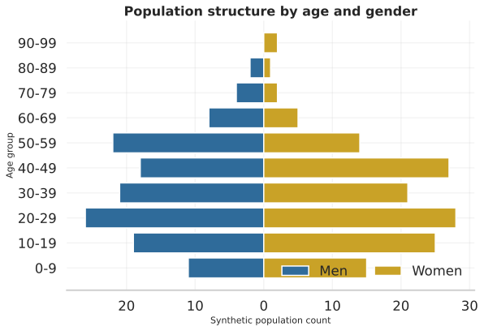
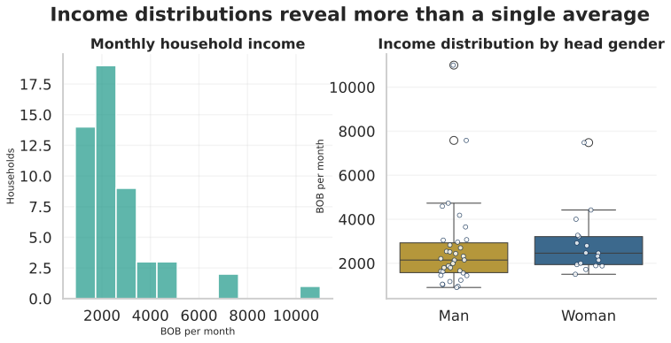
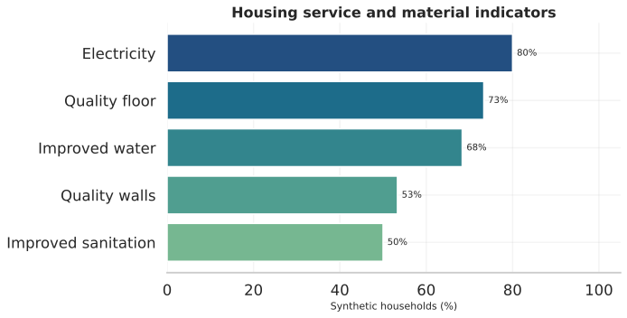
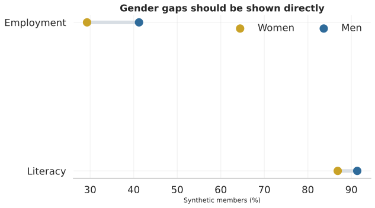
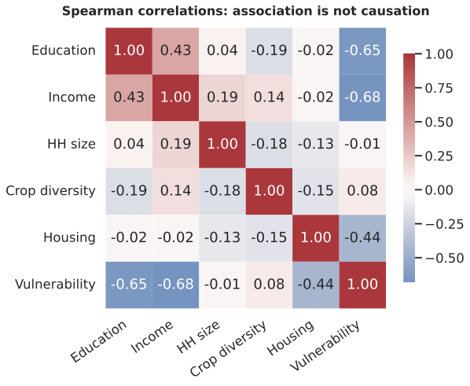
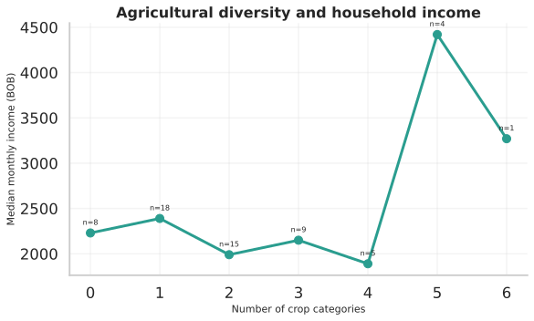

Synthetic households60Synthetic members271Adequate housing37.9%Median incomeBOB 2210
Analytical narrative

Population structure Missing data audit
Missing data audit
Income distribution Housing and uncertainty
Housing and uncertainty
Service access
Gender outcomes Multidimensional vulnerability
Multidimensional vulnerability
Associations Exploratory model
Exploratory model
Agricultural diversity
Methodological position
Estimates include uncertainty, missing data are disclosed, and the regression is explicitly exploratory. Association is not causation.